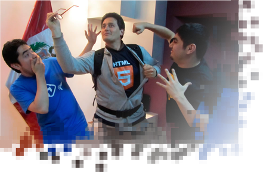
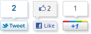
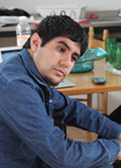
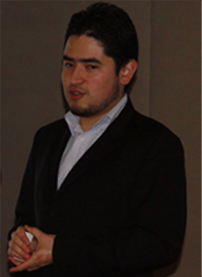
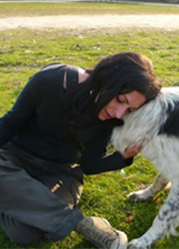
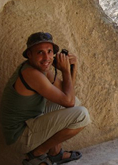

<!DOCTYPE html>
<!--[if lt IE 6]> <html class="no-js ie6 oldie" lang="en">  <![endif]-->
<!--[if IE 7]>    <html class="no-js ie7 oldie" lang="en"> <![endif]-->
<!--[if IE 8]>    <html class="no-js ie8 oldie" lang="en"> <![endif]-->
<!--[if IE 9]>    <html class="no-js ie9 oldie" lang="en"> <![endif]-->
<html lang="es" />
<head>
	<meta http-equiv="Content-Type" content="text/html; charset=utf-8" />
	<link media="screen" type="text/css" href="styles.css" rel="stylesheet" />
	<script src="js/prefixfree.js"></script>
	<link href='http://fonts.googleapis.com/css?family=Cantarell:400,700' rel='stylesheet' type='text/css'>
	<link href='http://fonts.googleapis.com/css?family=PT+Sans:400,700' rel='stylesheet' type='text/css'>
 	
 	<!--[if lt IE 9]>
		<script src="//html5shiv.googlecode.com/svn/trunk/html5.js"></script>
	<![endif]-->
	
	<!--[if (gte IE 6)&(lte IE 8)]>
	  <script type="text/javascript" src="js/selectivizr.js"></script>
	  <noscript><link rel="stylesheet" href="[fallback css]" /></noscript>
	<![endif]-->
	
	<script src="https://raw.github.com/rafaelp/css_browser_selector/master/css_browser_selector.js"></script>

	<script type="text/javascript" src="https://ajax.googleapis.com/ajax/libs/jquery/1.7.1/jquery.min.js"></script>
  
	<title>Mejorando La Conferencia</title>
</head>
<body>
	
	<header>
		<div class="container">
			<div></div>
			<ul>
				<li><a href="#"></a></li>
				<li><a href="#"></a></li>
			</ul>
		</div>
	</header>

	<div class="container">
		<section id="block-1" >
			
				<h1>Conferencias Online <span>del futuro de la web</span></h1>
				<ul>
					<li><a href="#">CSS3</a></li>
					<li><a href="#">Jquery</a></li>
					<li><a href="#">Python</a></li>
					<li><a href="#">Prey</a></li>
				</ul>
		</section>

		<section id="feature">
			<h3><span>[ +</span> <strong>Sábado 19 de noviembre</strong> a tráves de streaming en tu ciudad <span>]</span></h3>
			<ul id="horarios">
				<li>
					<p>Centroamérica</p>
					<span>12:00pm</span>
				</li>
				
				<li>
					<p>México - Colombia - Perú <br /> Ecuador- Panamá</p>
					<span>1:00pm</span>
				</li>
				
				<li>
					<p>Venezuela</p>
					<span>1:30pm</span>
				</li>
				
				<li>
					<p>Paraguay</p>
					<span>2:00pm</span>
				</li>
				
				<li>
					<p>Argentina-Chile <br/> Uruguay</p>
					<span>3:00pm</span>
				</li>

				<li>
					<p>España</p>
					<span>8:00pm</span>
				</li>
			</ul>

			<div id="primary">
				<div></div>

				<p>Se parte del segundo evento más importante del desarrollo web en habla hispana. El sábado 19 de noviembre durante 5 horas conocerás el futuro de las aplicaciones web gracias a tecnologías como HTML5, CSS3, Jquery, Python y programación ágil.</p>

				<p>¿Quieres asistir? Inscríbete abajo y recibirás la invitación exclusiva para entrar al evento. Lo podrás ver desde tu casa o desde uno de los auditorios de transmisión en ciertas ciudades.</p>
			</div>

			<div id="secondary">
				<div></div>

				<h3>¡Inscríbete ahora!</h3>
				<span>Para inscribirte y recibir tu invitación déjanos tu e-mail</span>

				<form>
					<input type="text" name="inscríbete-field" />
					<input type="submit" name="inscríbete" id="btn" />
				</form>
			</div>

			<ul id="sponsors">
				<li><a href="#"></a></li>
				<li><a href="#"></a></li>
				<li><a href="#"></a></li>
				<li><a href="#"></a></li>
				<li><a href="#"></a></li>
			</ul>

			<h3><span>[ +</span> Agenda del evento <strong>19 de noviembre</strong> <span>]</span></h3>
		</section><!-- end of feature-->

		<section id="agenda">
			<article>
				<div></div>
				<h2>Christian Van Der Henst <strong>@cvander</strong></h2>
				<h3>"¡La época dorada de HTML5 es hoy!"</h3>
				<p>Christian es líder y fundador de Maestros del Web, comunidad con 14 años difundiendo tecnologías web en español.</p>
				<p>En "¡La época dorada de HTML5 es hoy!" se enfocará en el Momento HTML5 que estamos viviendo. La importancia de este conjunto de tecnologías, consejos para vender HTML5 en tu empresa, a tus compañeros de trabajo y proyectos, pero sobre todo a tus clientes. Compartirá una colección de 20 sitios sobre HTML5 que tienes que explorar.</p>
			</article>

			<article>
				<div></div>
				<h2>John Freddy Vega <strong>@Freddier</strong></h2>
				<h3>"Cómo se construye el nuevo Internet"</h3>
				<p>Freddy es líder y fundador de Cristalab, una de las más grandes comunidades de diseño y desarrollo web hispano.</p>
				<p>En "Cómo se construye el nuevo Internet" nos mostrará el futuro y presente de la web. Cuales son las nuevas herramientas, técnicas y tecnologías para crear la nueva generación de aplicaciones web. Además de una mirada hacia qué dispositivos y formas de conectarnos tendremos en pocos años.</p>
			</article>

			<article>
				<div></div>
				<h2>Eugenia Bahit<strong>@eugeniabahit </strong></h2>
				<h3>"Desarrollar Software ágilmente con Scrum y eXtreme Programming "</h3>
				<p>Eugenia Bahit es una argentina Analista Programadora y Arquitecta de Software con más de 10 años de experiencia programando en tecnologías LAMP. Se desarrolla como Scrum Coach, entrenando equipos de desarrollo. </p>
				<p>Dile "Adiós!" a los anticuados métodos primitivos que solo se centran en el cumplimiento estricto de un plan, dejando de lado la calidad del software generado. Desarrollar aplicaciones innovadoras, trabajando de forma eficiente, profesional y colaborativa, enfocándose 100% en resultados, es posible. Prepárate para conocer los "qué" y los "cómo" y sorpréndete!</p>
			</article>


			<article>
				<div></div>
				<h2>Miguel Angel Alvarez <strong>@alvarezmiguelan </strong></h2>
				<h3>"Todo lo que deseabas saber sobre jQuery"</h3>
				<p>Miguel Angel Alvarez es originario de Madrid, con un amplia experiencia como desarrollador web y además fundador de varios proyectos en Internet entre ellos destaca desarrolloweb.com. Aprende en pocos minutos todo lo que deseabas saber sobre jQuery con un hola mundo, recursos, plugins, librerías y más.</p>
				
			</article>

			<article>
				<div></div>
				<h2>Tomas Pollak <strong>@tomaspollak</strong></h2>
				<p>Tomás Pollak es chileno, periodista, desarrollador web, amante de la música y la tecnología. Es el creador de Prey un sofware que te permite recuperar tu computador si este ha sido robado o extraviado</p>
			</article>
		</section><!-- end of  agenda-->

		<section>
			<h3><span>[ +</span> ¿Quieres ver las conferencias en un auditorio en tu ciudad? <span>]</span></h3>

			<div>
				<div></div>
				<p>El evento se transmite online, pero varios amigos están coordinando reuniones en sus ciudades para disfrutar el Sábado HTML5 en compañia de otros geeks. Además se están organizando demostraciones de proyectos locales, pizza, networking y en algunos casos, regalos para los asistentes.</p>
			</div>

			<h4>Ciudades confirmadas</h4>
			<ul>
				<li>Asunción, Paraguay</li>
				<li>México DF, México</li>
				<li>Santiago Ixcuintla, Nayarit, México</li>
				<li>Puebla, México</li>
				<li>Chihuahua, México</li>
				<li>Ciudad Juarez, México</li>
				<li>Leon, México</li>
				<li>San Salvador, El Salvador</li>
				<li>Panamá, Panamá</li>
			</ul>

			<ul>
				<li>Puno, Perú</li>
				<li>Tacna, Perú</li>
				<li>Bogotá, Colombia</li>
				<li>Tunja, Colombia</li>
				<li>Buga, Colombia</li>
				<li>Girardot, Cundinamarca, Colombia</li>
				<li>Sogamoso, Bocayá, Colombia</li>
				<li>Santiago, Chile</li>
				<li>Guatemala, Guatemala</li>
			</ul>
		</section>

		<footer>
			<h3>[ + Nosotros te enseñamos a crear la web ]</h3>

			<section>
				<div></div>

				<div>
					<p>Organizamos y participamos en eventos, cursos y talleres de muchas ramas del diseño y desarrollo online. En nuestros sitios se han gestado profesionales certificados de Adobe, líderes locales, empresarios, emprendedores, diseñadores premiados y grandes programadores.</p>

					<p>Como los fundadores de las comunidades más importantes de desarrolladores y diseñadores de habla hispana nos juntamos para enseñar y compartir nuestro conocimiento. Sabemos de Internet y es nuestra misión enseñar y compartir el conocimiento de la comunidad.</p>
				</div>
				
			</section>
		</footer>
	</div><!-- end of container-->
</body>
</html>